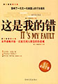

十一月过生日的员工如下
祝他们生日快乐！（不完全列表）
| 部门 | 姓名 | 生日 |
|---|---|---|
| 财务部 | 陈霞 | 1981-11-24 |
| 仓储部 | 陈华章 | 1972-11-15 |
| 大药房 | 周艳华 | 1981-11-7 |
| 大药房 | 吴怀友 | 1962-11-19 |
| 计划采购部 | 胡伟东 | 1967-11-17 |
| 配送部 | 王东 | 1983-11-10 |
| 企管部 | 陈建周 | 1984-11-25 |
| 信息中心 | 吴骏 | 1982-11-7 |
| 信息中心 | 胡世勇 | 1978-11-23 |
| 营销部 | 刘艳 | 1982-11-20 |
| 营销部 | 杨晶（小） | 1985-11-23 |
| 营销部 | 宫志刚 | 1982-11-24 |
| 营销部 | 梁亚利 | 1985-11-27 |
| 营销部 | 鲁晶晶 | 1981-11-28 |
| 营销部 | 宋红霞 | 1981-11-29 |
| 原料药事业部 | 刘勇 | 1978-11-7 |
| 运输部 | 李群阳 | 1968-11-1 |
| 运输部 | 夏丽萍 | 1967-11-3 |
| 运输部 | 杨晓军 | 1975-11-5 |
| 质管部 | 程利军 | 1969-11-17 |
点击这里查看全部！
仓储部精细化管理提升月序言
金秋颂歌，活力激扬。在这收获的季节，湖北九州通仓储部开始了精细管理提升月的活动，从制度流程、库容库貌、员工培训、效率提升、管理者管理水平提升等等各个方面对仓储部的管理进行加强……
详细内容

本期推荐《这是我的错》
你是否想成为一个被委以重任的人？让我来描述一下这种人的特征吧：他们并非不犯错误，而是与一般人相比，他们敢于承认错误；他们从不把责任推给别人，他们常说一句话——这是我的错。
《这是我的错》共分为四个部分： 第一部分“这是我的错”，给我们讲述了犯错并不可怕，可怕的是没有主动地从内心深处承认自己的错误……

伏尔泰说：“耳朵是通向心灵的道路。”但我们的心中往往有太多的自己的成见，这成为我们倾听别人的最大障碍。细数世界级的创业大腕、打工皇帝，几乎个个是倾听的高手。
1.沃尔玛的创始人山姆·沃尔顿一生都在勤勉工作。60多岁的时候，他每天仍然从早上4点半就开始工作，直到第二天凌晨。偶然还会在某个凌晨5点钟访问一处配送中心，与员工们一起吃早餐。他常自己开着飞机，从一家分店跑到另一家分店，每周至少有4天时间花在这类访问上。
10月份，一次视频会议过程中，三个三级分公司也参加了，但在这一次会议中，平均不到十分钟就掉一次线，三级分公司的视频会议根本无法开展，给大家留下了不好的印象。
会议结束发后，信息中心进行了认真的测试，最后将结果锁定为视频会议系统对文件的支持方面出了问题。
第二天，总经理便对我作出了指示，给了我一张工作联系函，视频会议整改，视频会议管理办法，以及相关的培训，接到任务后信息中心立即展开了相关工作，制定了管理办法……